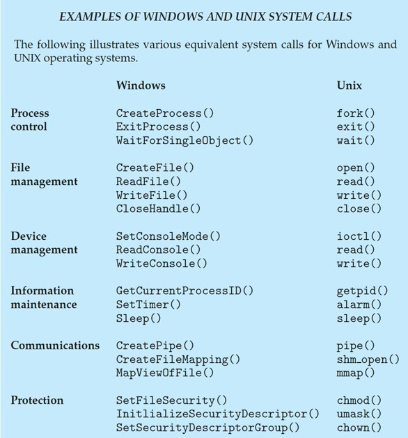

Chapter8 OS Structures
OS Services

Helpful to users:
- program execution 程序执行
- I/O operations 输入/输出操作
- file systems 文件系统（提供文件抽象）
- communications 交互（内存共享，信息传递）
- error detection 错误检测
Better efficiency/operation:
- resource allocation 资源分配
- accounting 记账（统计用户的资源使用情况，可产生限制）
- protection and security 保护与安全
User and Operating System-Interface
- GUI 图形用户界面
- batch 批处理
- CLI 命令行
batch 批处理： 一种自动化执行一系列命令或任务的方法，通常通过脚本文件实现。 用户编写脚本，定义一组命令，这些命令按顺序自动执行，而无需用户交互。
CLI 命令行： CLI有时在内核中实现，有时通过系统程序实现。 命令分为内置（在命令解释器shell内部实现，如
ls，cd等）和外置（系统中的可执行文件，位于文件系统的某个位置，如gcc，python等）。
System Calls
- 操作系统提供给应用程序的接口，用于请求操作系统内核执行特定的服务或操作
- 通常用高级语言编写（C/C++）
- 被更高一层的API调用，而不是被直接调用
API（Application Programming Interface，应用程序接口）： 应用程序之间交互的一组定义和协议，提供更高层次的抽象，使得应用程序不需要了解底层实现细节，只需使用定义好的接口来实现功能 系统调用是最底层的接口，由操作系统内核直接提供，而 API 则可以是更高层次的接口，可能会调用多个系统调用以实现复杂的功能 例如：
open()，read()，write()，close()是syscall；fopen()，fread()，fwrite()，fclose()是API
//vesion1:
# include<stdio.h>
int main()
{
printf("hello world\n");
}
//version2:
#include<unistd.h>
int main()
{
write(1,"hello world\n",13);
}
上面两段代码的功能完全一样，区别在于：
- version1使用标准输入输出库
stdio.h，version2使用POSIX标准库unistd.h（POSIX是Linux的API） - version1的
printf函数是高级别的C标准库函数，version2的write函数是低级别的syscall，直接与kernel交互 write的第一个参数“1”表示文件描述符，“13”表示要写入的字符数

syscall number 系统调用号：
操作系统内核用于区分不同系统调用的一种数字标识。当应用程序发出一个系统调用请求时，它会将对应的系统调用号传递给内核，以告知内核需要执行的具体操作（通过查syscall table得到）。
read:0write:1open:2close:3
文件描述符：
操作系统用来标识和访问打开的文件或I/O资源的整数。
- 标准输入
stdin:0 - 标准输出
stdout:1 - 标准错误输出
stderr:2
Example of System Calls: Copy Files
strace命令：
strace用来展示程序在执行时需要调用的syscall种类和数量
time命令：
time用来得到程序执行的时间
- real time：总时间
- user time：在user层的时间
- system time：在kernel层的时间
理论上：real=user+system
若real
syscall的参数传递：
- 传值调用（将值放入寄存器）
- 传引用调用（将指针地址放入寄存器）
- 使用栈
后两者对参数的数量或者长度没有限制
syscall的种类：
- Process control 进程控制
- File management 文件管理
- Device management 设备管理
- Information maintenance 信息维护
- Communications 交互
- Protection 保护

System Services
上文提到的strace，time都属于System Services
- File manipulation 新建、删除、复制、重命名等
- Status information 查询得到日志、debugging信息等
- Programming language support 如编译器、汇编器等
- Program loading and execution 绝对加载器、可重定位加载器、链接编辑器等
- Communications
- 网页浏览、远程登录、文件传输等
- Background services 服务、子系统、守护进程等
- Application programs 应用程序
Linkers and Loaders
Linker 链接器：
将多个目标文件和库文件链接在一起，生成最终的可执行文件
Loader 加载器：
在程序执行时将可执行文件加载到内存中，并准备程序运行，在加载过程中，重定位会为程序的各个部分分配最终的地址，并调整代码和数据以匹配这些地址

ELF（Executable and Linkable Format 可执行与可链接格式）：
是一种用于存储可执行文件、共享库和核心转储的标准文件格式
组成（section 节）： * ELF header 文件头：包含ELF的基本信息，如文件类型，架构类型，程序头表和节头表的位置和大小等 * Program header table 程序头表：描述程序段的信息，指导加载进内存 * .text：存储可执行代码 * .rodata：存储只读数据 * .data：存储已初始化的可读写的数据 * .bss：存储未初始化的可读写的数据 * Section header table 节头表：描述各个节的信息，用于连接和重定位
.bss单独分出来是为了节省空间
静态链接与动态链接：
静态链接：在编译时将库的代码直接合并到可执行文件中 （可移植性好）
动态链接：在运行时将库文件加载到内存中，程序依赖这些外部库 （节约空间）
.interp：
.interp是ELF文件中的一个特殊节（section），它的作用是指定程序执行时需要使用的动态链接器（interpreter）。动态链接器负责在程序运行时加载和链接动态库
静态链接的elf没有.interp节，动态链接的elf有.interp节
memory layout:

当我们要执行一个ELF时，我们会将其不同的section映射到如图所示的BSS segment,Data segment,Text segment处，对于动态链接，其动态库的文件等会被映射到Memory Mapping Segment，而静态链接没有这一映射
对于静态链接的elf，如果我们运行并使用strace查看调用syscall的情况，我们发现其调用了
* execve：用于执行一个新的程序，用新的程序替换当前进程的内存映像
* brk：用于调整数据段的结束地址，从而改变进程的堆空间大小（分配内存）
* write
$~$
- 将ELF映射到内存的是kernel（exec syscall）
- 初始化栈和堆的是kernel（exec syscall）
- 将动态库文件映射到内存的是loader
exec是一组用于在操作系统中执行新程序的系统调用，它们使当前进程的地址空间被新程序替换。exec系列系统调用包括execl,execv,execle,execve等，每个都有略微不同的参数形式，但基本功能相同。
栈和堆：
-
操作系统中的栈和堆：栈用于存储函数调用的临时数据，包括局部变量、函数参数和返回地址；堆用于动态内存分配
-
数据结构中的栈和堆：用于特定算法和数据处理
ELF是如何开始被执行的：
静态链接：
在evecve调用后进入_start入口点（而不是main()，main()只是用户程序的入口点）

动态链接：
与静态链接不同，在evecve调用后进入loader（ld.so）

Why Applications are Operating System Specific
在一个OS上能执行的App在其他OS上往往不能执行，因为不同的OS使用不同的syscall
然而，以下情况不然： * App使用解释型语言（如Python等），且有合适的interpreter * App使用Java等跨平台语言，其在虚拟机（VM）上运行 * App使用标准语言（如C等），在不同的OS上分别编译运行
ABI（Application Binary Interface）
ABI（Application Binary Interface）和API（Application Programming Interface）都是用于定义软件组件之间交互的接口，但API定义的是源代码级别（上层）的接口，ABI定义的是二进制级别（底层）的接口
Operating-System Design and Implementation
设计理念：
对于用户： 方便使用，安全迅速
对于程序员： 方便设计维护，灵活有效
- Policy 策略： 做什么
- Mechanism 机制： 怎么做
核心理念：Separation of Policy from Mechanism
例如：Policy：选这门课的同学进这个教室 Mechanism1：锁与钥匙 如果改变Policy为：实验好的同学不需要来了，则需要向所有目标回收钥匙，但有很多突发情况，此时Policy和Mechanism相关性很强，并不是一个好方法 Mechanism2：刷脸 改变Policy时，Mechanism改变很方便，是一个好方法
实现：
早期OS用汇编语言实现 中期OS用Algol，PL/1实现 当代OS用C，C++实现
事实上，OS有多种语言参与，低层级用汇编语言实现，主体用C实现，脚本用PERL，Python等实现
OS不能用Java写的原因： OS需要直接与硬件交互，但Java是高级语言，依赖于虚拟机（JVM），其设计初衷是屏蔽底层硬件细节，提供跨平台能力
Operating System Structure
- MS-DOS采用简单结构（Simple Structure）
- Unix，Linux采用单片结构（Monolithic）
- 层次结构（Layered）
- 微内核结构（Microkernel）
简单结构： 没有模块区分，不分user和kernel 单片结构： 分为kernel和systems programs，集中服务 层次结构： 微内核结构：
Unix架构：

Linux架构：